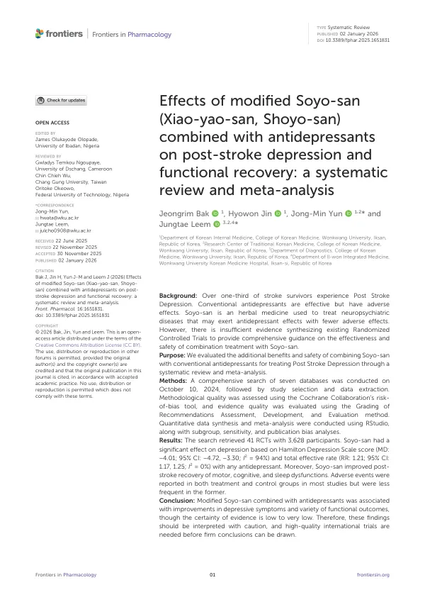

Effects of modified Soyo-san (Xiao-yao-san, Shoyo-san) combined with antidepressants on post-stroke depression and functional recovery: a systematic review and meta-analysis
Bak J, Jin H, Yun JM, Leem J
Frontiers in Pharmacology 16:1651831

첫 장 · 오픈액세스First page · open access
논문 소개Summary
뇌졸중을 겪은 사람 셋 중 한 명 이상이 우울을 함께 앓습니다. 뇌졸중 후 우울은 기분의 문제로 끝나지 않고 재활 참여를 떨어뜨려 운동기능 회복까지 늦춥니다. 항우울제는 효과가 있지만 이상반응이 따르고, 이미 여러 약을 먹고 있는 뇌졸중 환자에게 약을 하나 더 얹는 부담도 있습니다. 소요산은 신경정신질환에 오래 써 온 처방입니다. 항우울제와 함께 썼을 때 무엇이 더해지는지 종합한 근거가 부족했습니다.
2024년 10월 10일 데이터베이스 7곳을 검색해, 가미소요산과 항우울제를 함께 쓴 군과 항우울제만 쓴 군을 비교한 무작위배정 임상시험을 모았습니다. 비뚤림 위험은 코크란 도구로, 근거 수준은 GRADE로 평가했고 하위군 분석, 메타회귀, 민감도 분석, 출판비뚤림 검정을 함께 했습니다. 연구계획은 PROSPERO에 등록했습니다(CRD42024510361).
41편 3,628명이 모였습니다. 해밀턴 우울척도 점수는 병용군에서 더 낮았고(MD -4.01, 95% CI -4.72~-3.30) 총유효율도 병용군이 높았습니다(RR 1.21, 95% CI 1.17~1.25). 우울에 그치지 않고 운동기능, 인지기능, 수면의 질을 잰 지표에서도 병용군이 나았습니다. 이상반응은 두 군 모두에서 보고됐으나 병용군에서 덜 잦았습니다.
숫자만 보면 결과가 고르지만 그 뒤를 보아야 합니다. 해밀턴 우울척도 결과의 이질성은 매우 컸고(I2 94%), 총유효율은 이질성이 없었습니다(I2 0%). 포함된 연구가 모두 중국에서 이루어져 다른 의료 환경에 그대로 옮기기 어렵습니다. 우울의 진단 기준이 연구마다 다르거나 임의로 정한 증상에 기대는 경우가 있었고, 소요산의 용량과 복용 방법도 제각각이었습니다. 뇌졸중 자체에 대한 치료가 두 군에서 어떻게 이루어졌는지 명확히 적지 않은 연구도 있었습니다.
근거 수준은 낮음에서 매우 낮음이었습니다. 통계적으로 유의한 결과가 나온 지표들에도 임상적으로 의미 있는 최소 변화량이 정해져 있지 않아, 이 정도 차이가 환자에게 어떻게 느껴지는지는 말할 수 없습니다. 이상반응 보고에 중증도 등급이 빠져 있어 이득과 위험을 나란히 놓기도 어렵습니다. 사용한 약재의 기원과 성분을 밝힌 연구는 절반에 못 미쳤습니다. 결론을 확정하려면 진단 기준을 DSM-5로 맞추고 뇌졸중 관리 내용을 분명히 적은 다국가 임상시험이 필요합니다.
More than one in three stroke survivors also live with depression. Post-stroke depression is not only a matter of mood; it lowers participation in rehabilitation and slows motor recovery. Antidepressants work but carry adverse effects, and adding another drug burdens patients already on several. Soyo-san has long been used for neuropsychiatric conditions, yet evidence on what it adds alongside antidepressants was insufficient.
Seven databases were searched on 10 October 2024 for randomised controlled trials comparing modified Soyo-san plus antidepressants with antidepressants alone. Risk of bias was assessed with the Cochrane tool and certainty with GRADE, together with subgroup, meta-regression, sensitivity and publication bias analyses. The protocol was registered with PROSPERO (CRD42024510361).
Forty-one trials with 3,628 participants were included. Hamilton Depression Scale scores were lower in the combination group (MD -4.01, 95% CI -4.72 to -3.30) and the total effective rate was higher (RR 1.21, 95% CI 1.17 to 1.25). Beyond depression, measures of motor function, cognition and sleep quality also favoured the combination. Adverse events were reported in both groups but were less frequent with the combination.
The numbers look consistent, but what sits behind them matters. Heterogeneity for the Hamilton scale was very high (I2 94%) while the total effective rate showed none (I2 0%). Every included trial was conducted in China, which limits transfer to other health systems. Diagnostic criteria for depression differed across trials or rested on arbitrarily chosen symptoms, and the dose and schedule of Soyo-san varied. Some trials did not clearly describe how stroke itself was managed in each group.
Certainty of evidence was low to very low. No validated minimal clinically important differences exist for these outcomes, so what the observed differences feel like to a patient cannot be stated. Adverse events were reported without standardised severity grading, making benefit and harm hard to place side by side. Fewer than half of the trials described the botanical origin of the herbs used. Firm conclusions will require multinational trials that apply DSM-5 criteria and state stroke management explicitly for both groups.
인용Cite
Bak J, Jin H, Yun JM, Leem J. Effects of modified Soyo-san (Xiao-yao-san, Shoyo-san) combined with antidepressants on post-stroke depression and functional recovery: a systematic review and meta-analysis. Frontiers in Pharmacology. 2026;16:1651831. doi:10.3389/fphar.2025.1651831